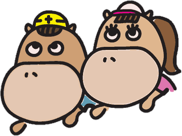
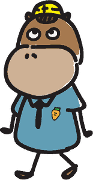

日本大学危機管理学部
防災ロゲイニング
スマホを手に、校内5か所であいことばを集めよう。
「防災」ロゲイニングです

危機管理学部では、安全保障、サイバーセキュリティ、社会安全などとともに、 防災の制度や運用について学びます。
今日は、この校舎にある防災関連の施設・設備を実際に見て、 防災に関する研究の一部にも触れてもらいます。
「ロゲイニング」とは
地図を手に、指定されたチェックポイントをまわり、ルートを組み立てて周遊しながら、 得点を競うゲームです。移動は自分の足で行います。
今回は校内版です。本来は時間も問いますが、 安全のため、時間は問いません。 ルートも、混みあわないよう受付で指定します。 5か所すべてをまわって、 その場でしか手に入らないあいことばの文字と★を集めてください。 参加は個人でも、友だちどうしでもかまいません。 標準所要時間は20分ですが、目安です。
やりかた
- 受付で指定されたルートを選んでスタート。名前や連絡先は聞きません。
- 画面に出る「つぎに行く場所」の地図を見て、そこへ歩く。
- 着いたら、その場のQRコードをスマホのカメラで読み取る。
- 写真と説明を読み、ミニクイズに答える。
- 正解するとあいことばの1文字がもらえる。
- また「つぎに行く場所」が出る。これを5回くり返してゴールへ。
※ ルートは2種類あります。同じ場所に人が集中しないよう、 必ず自分のルートの順番で回ってください。
※ 1か所だけ、地図に場所を出していないミステリースポットがあります。 現地の案内表示と学生スタッフをたよりに探してください。
※ まちがえても、ヒントを見て何度でも答えられます。1回で正解すると★がつきます。
※ スマホは一緒に回る人で1台あれば大丈夫です。画面を見せ合いながら回ってください。
記録について（個人情報は預かりません）
名前も連絡先も聞きません。 だれが参加したか、だれが何問正解したかを、大学側で記録することはありません。
進み具合と★はスマホの中だけに保存されます。 このアプリにはサーバーもデータベースもなく、 クイズに答えた内容がどこかへ送られることはありません。 「はじめからやり直す」を押すか、ブラウザの保存データを消せば、記録も消えます。
位置情報（GPS）は使いません。
※ アプリを置いている外部サーバー（GitHub）には接続記録が一時的に残りますが、 オープンキャンパスの終了後、サイトごと削除します。
※ 最後に無記名のアンケートがあります。回答は自由です。 Google フォームによるアンケートで、回答は Google のサーバーに保存されます。 皆さんの端末が Google にログイン中であると（ログアウトするか、シークレットウィンドウで開く場合は別）、 Google 側からは送信者が回答も含めて分かる状態になります。 大学側には分かりません。
いよいよ、スタートです
説明はここまでです。安全確認をして、順路を受け取ったら出発です。
② 出発前の安全確認
この5つが、今日の注意事項のすべてです。 ひとつずつ押して、チェックを入れてください。
③ あなたの順路
受付の順路QRコードを読み取ると、ここが自動で決まります。
QRが読めないときは、受付で指定されたほうを押してください。